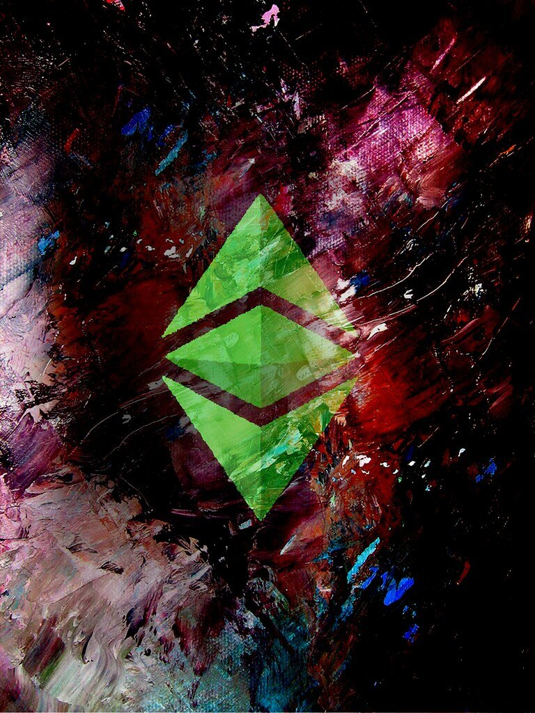
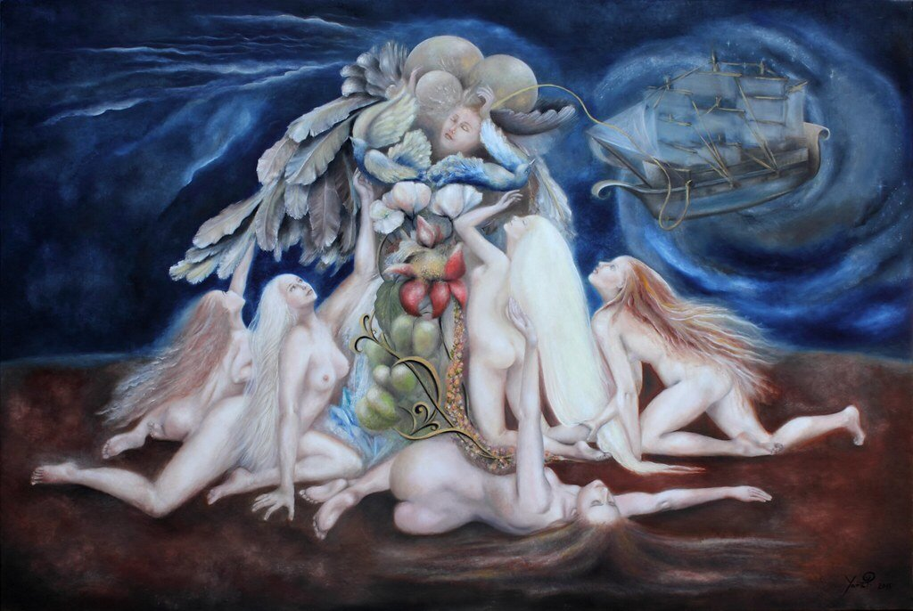
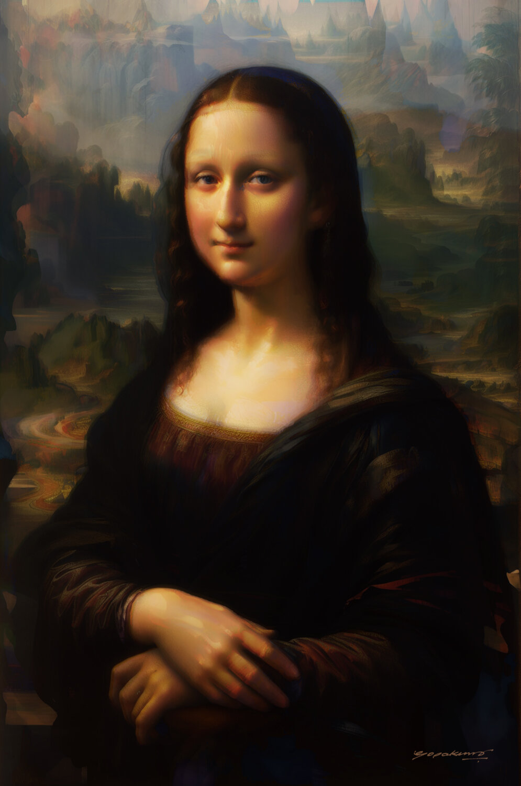
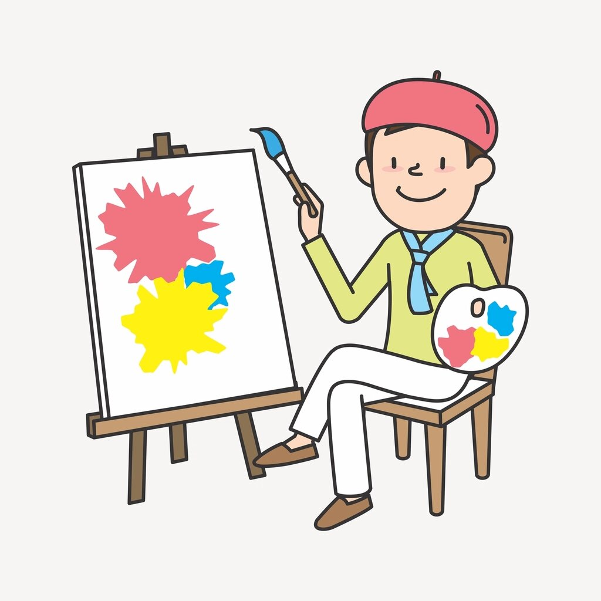
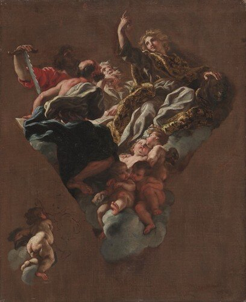
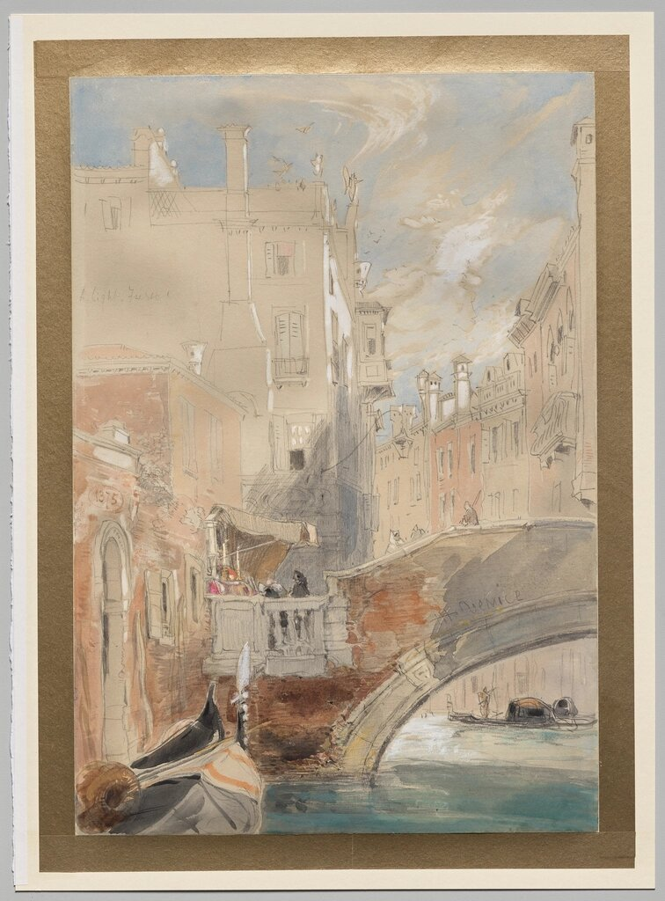
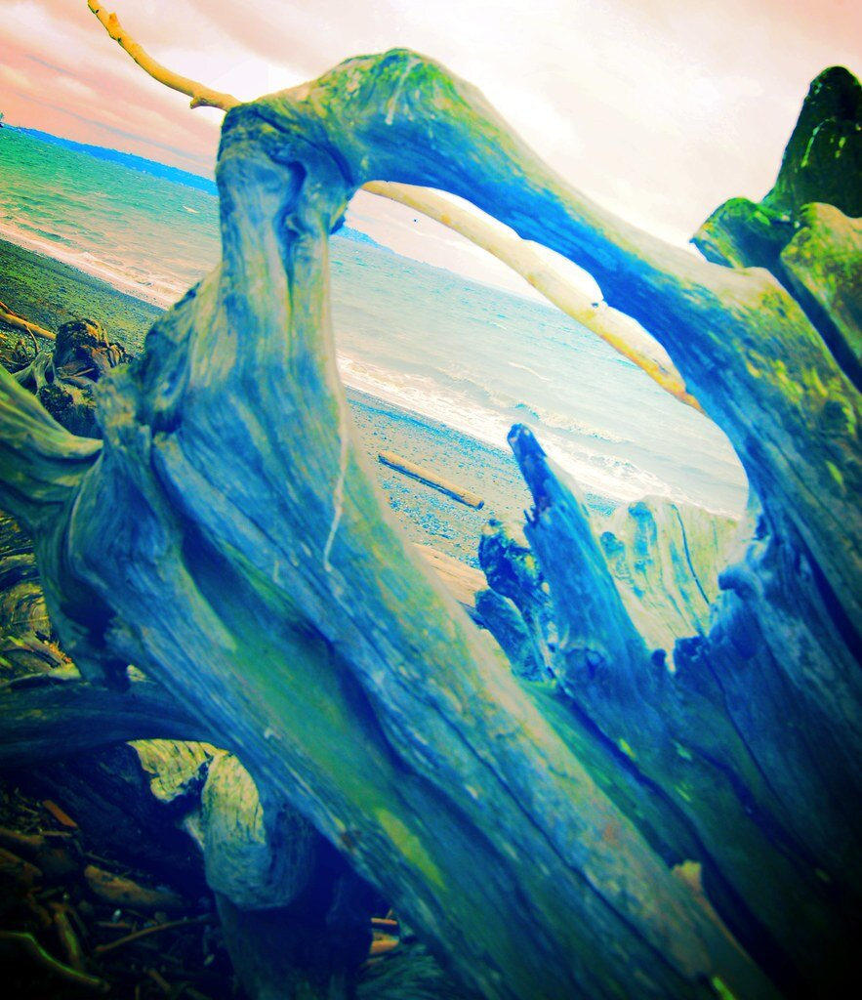

Venecia enseñó a pintar la luz no de golpe, sino capa sobre capa transparente.

La veladura deja pasar la luz hasta el fondo y la devuelve teñida. Sobre una imprimatura cálida, los talleres venecianos levantaban una luminosidad que ningún color plano alcanza. Entre capa y capa había que esperar a que el óleo secara: la paciencia era parte del pigmento.


Venecia, ciudad de humedad y sal, halló en la tela tensada un soporte más dócil que la madera: el lienzo respiraba con la laguna y aceptaba el óleo sin agrietarse. Sobre su trama se extendía primero una cola y luego una imprimatura coloreada, de modo que el grano mismo de la tela participaba en la vibración de la luz.

Linaza y nuez ligaban el pigmento y, al oxidarse lentamente, fijaban la luz en una película tersa.
Almáciga y trementina daban cuerpo y brillo al médium, y permitían veladuras cada vez más finas.
Bermellón, ocres, tierras y un azul ultramarino traído por mar: el comercio de la Serenísima en la paleta.
Denso y opaco, sostenía las altas luces y los empastes sobre los que después caía la veladura.

La técnica no nace en el vacío: imita una luz que existe. La de Venecia es una claridad reflejada, devuelta por el agua y el cielo bajo, sin sombras duras. Pintar por veladuras es traducir esa atmósfera húmeda al lienzo: una luz que no golpea, sino que envuelve y se filtra.

Cuando el óleo seca, su brillo se vuelve desigual: unas zonas hunden la luz, otras la rebotan. El barniz final unifica esa superficie y satura de nuevo los oscuros, devolviendo a la obra la profundidad que tenía aún fresca. Es a la vez piel y memoria: protege el color y, con los siglos, lo dora.

El óleo nunca termina de secar del todo: sigue moviéndose durante décadas. Las veladuras se asientan, el barniz amarillea y la imprimatura, antes oculta, asoma en finísimas craqueladuras. Lo que llamamos pátina es la obra continuando su trabajo: el tiempo se vuelve una capa más, la última, que nadie aplicó a propósito.
Veladura. Capa transparente de óleo muy diluido.
Imprimatura. Tinte de fondo que unifica la luz.
Empaste. Pintura espesa para las altas luces.
Sfumato. Transición sin contornos entre tonos.
Carnación. El tratamiento de la piel y su luz interior.
Médium. Aceite y resina que regulan transparencia y secado.
Aparejo. Preparación que sella la tela antes de pintar.
Pátina. Capa que el tiempo deposita sobre el barniz.
Craqueladura. Red de finas grietas del óleo seco.
Ciertos óleos no reflejan la luz: la guardan.
El óleo no fue invención de una sola ciudad. Flandes lo perfeccionó antes de que Venecia lo abrazara; España lo recibió de ambas tradiciones y lo tensó con su propia luz. Cada escuela respondió a su cielo, a su comercio y a su fe.
El taller del pintor al óleo no es un lugar aleatorio: es un instrumento. Cada elemento —la orientación de la ventana, la altura del caballete, la disposición de los frascos— forma parte del método tanto como el pincel mismo.
Una ventana orientada al norte entrega una claridad sin sol directo: estable durante horas, sin el dramatismo de las sombras que rota. Con ella, el valor de cada tono permanece fiel a lo largo de la sesión.
La tela debe quedar lo más vertical posible para que el ojo vea la obra en el mismo plano en que la verá el espectador. El caballete de estudio, pesado y ajustable, permite subir o bajar el lienzo al nivel de la vista sin doblar la espalda.
Los colores se disponen siempre en el mismo orden, de los claros a los oscuros, de los cálidos a los fríos. La paleta es memoria muscular: el pintor no mira la mano cuando mezcla, mira el lienzo.
Frascos de aceite de linaza, de nuez, de trementina veneciana y de barniz diluido se alinean en el borde de la mesa de trabajo. La proporción elegida en cada mezcla decide si la capa resultante será grasa y lenta, o magra y rápida.
Un óleo no seca: se oxida. La película de aceite que liga el pigmento reacciona lentamente con el oxígeno del aire y forma una red de polímeros que se vuelve más rígida con cada década. Este proceso, llamado polimerización, puede durar siglos: hay óleos del siglo XV que todavía siguen moviéndose a escala molecular, ajustándose a los ciclos de humedad y temperatura del lugar donde cuelgan.
Cuando la película ya no puede seguir expandiéndose y contrayéndose sin ceder, aparece la craqueladura: una red de fisuras finas que el tiempo dibuja sobre la superficie como un mapa de su propia historia. Lejos de ser un defecto, el craquelado es firma del tiempo. La restauración no borra estas grietas; las consolida, fija los bordes levantados con adhesivos reversibles y devuelve estabilidad sin fingir que el daño no existió. Un óleo bien restaurado lleva visible la cuenta de sus años.
El óleo no seca por evaporación sino por oxidación: el aceite de linaza o nuez absorbe oxígeno del aire y forma una red polimérica sólida. Este proceso es lento porque depende del grosor de la capa, la temperatura, la humedad y el pigmento empleado. El blanco de plomo seca en días; el negro marfil puede tardar semanas. La paciencia entre capas no es opcional: es parte del método.
Una veladura es una capa de óleo muy diluido en médium, tan transparente que el color que hay debajo sigue visible a través de ella. Al superponerse varias veladuras de distintos tonos, el ojo las mezcla ópticamente en lugar de físicamente: el resultado es una profundidad y vibración que ninguna mezcla directa sobre la paleta puede reproducir.
La craqueladura aparece cuando la película de óleo, ya rígida tras décadas de oxidación, no puede seguir siguiendo los movimientos del soporte. Los cambios de humedad y temperatura hacen que la tela o el panel se expandan y contraigan; la pintura, menos flexible, se fractura en una red de fisuras. El patrón de esa red es casi un diagnóstico: revela qué capas se aplicaron demasiado gruesas, qué zonas secaron antes que otras y qué condiciones climáticas ha soportado la obra.
Sí, pero no al revés. El óleo puede aplicarse sobre una base acrílica ya seca porque el acrílico es magro y el óleo es graso, y la norma de la pintura por capas exige ir de menos a más graso. Lo que no se puede hacer es cubrir óleo con acrílico: la película oleosa, al seguir moviéndose, desprenderá la capa acrílica superpuesta. Esta asimetría convierte al acrílico en un preparador versátil para el óleo, pero no en una capa de acabado.
La luz no se pinta de golpe: se sedimenta, capa a capa, con la misma paciencia que tiene el tiempo.